17. Causal Inference: Same Backend (SB) - Laplace Kernel
Source:vignettes/legacy/v17-causal-same-backend-SB.Rmd
v17-causal-same-backend-SB.RmdLegacy vignette (for the website / historical notes). These files may not match the current exported API one-to-one. Last verified: 2026-01-18.
For the up-to-date workflow, see the main package vignettes (Introduction, Model Spec, MCMC Workflow, Unconditional/Conditional/Causal, Backends, S3 Reference).
Theory (brief)
The causal workflow fits treated and control arms with covariate adjustment, optionally including propensity scores. Using the same backend and kernel emphasizes treatment-induced distributional differences.
Causal Inference: Same Backend (SB) - Laplace Kernel
This vignette fits two SB-based causal models using the same kernel (Laplace):
- Model A: bulk-only outcome models (GPD = FALSE)
- Model B: GPD-augmented outcome models (GPD = TRUE)
Data Setup
data("causal_alt_real500_p4_k2")
y <- causal_alt_real500_p4_k2$y
T <- causal_alt_real500_p4_k2$T
X <- as.matrix(causal_alt_real500_p4_k2$X)
summary_tbl <- tibble(
statistic = c("N", "Mean", "SD", "Min", "Max"),
value = c(length(y), mean(y), sd(y), min(y), max(y))
)
summary_tbl %>%
mutate(value = signif(value, 4)) %>%
kable(caption = "Causal Dataset Summary", align = "c") %>%
kable_styling(bootstrap_options = c("striped", "hover"), full_width = FALSE, position = "center")| statistic | value |
|---|---|
| N | 500.000 |
| Mean | 0.274 |
| SD | 1.764 |
| Min | -8.089 |
| Max | 5.275 |
x_eval <- X[1:40, , drop = FALSE]
y_eval <- y[1:40]
u_threshold <- as.numeric(stats::quantile(y, 0.8, names = FALSE))
df_causal <- data.frame(y = y, T = as.factor(T), x1 = X[, 1], x2 = X[, 2])
p_scatter <- ggplot(df_causal, aes(x = x1, y = y, color = T)) +
geom_point(alpha = 0.5) +
labs(title = "Outcome vs X1 by Treatment", x = "X1", y = "y", color = "Treatment") +
theme_minimal()
p_scatter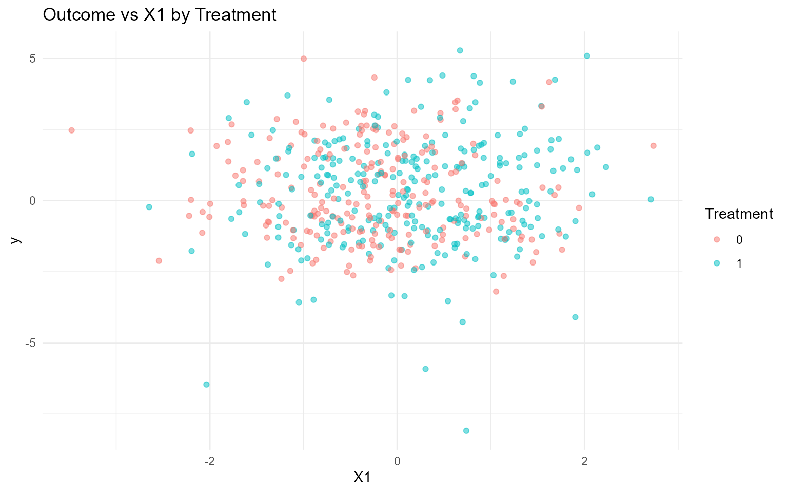
Model A: SB Bulk-only (Laplace)
bundle_sb_bulk <- build_causal_bundle(
y = y,
T = T,
X = X,
kernel = "laplace",
backend = "sb",
PS = "logit",
GPD = FALSE,
components = 5,
mcmc_outcome = list(niter = 2500, nburnin = 500, nchains = 1, thin = 1, seed = 1),
mcmc_ps = list(niter = 2500, nburnin = 500, nchains = 1, thin = 1, seed = 1)
)
bundle_sb_bulkDPmixGPD causal bundle
PS model: disabled
Outcome (treated): backend = sb | kernel = laplace
Outcome (control): backend = sb | kernel = laplace
GPD tail (treated/control): FALSE / FALSE
components (treated/control): 5 / 5
Outcome PS included: FALSE
epsilon (treated/control): 0.025 / 0.025
n (control) = 232 | n (treated) = 268
summary(bundle_sb_bulk)DPmixGPD causal bundle summary
DPmixGPD causal bundle
PS model: disabled
Outcome (treated): backend = sb | kernel = laplace
Outcome (control): backend = sb | kernel = laplace
GPD tail (treated/control): FALSE / FALSE
components (treated/control): 5 / 5
Outcome PS included: FALSE
epsilon (treated/control): 0.025 / 0.025
n (control) = 232 | n (treated) = 268
fit_sb_bulk <- run_mcmc_causal(bundle_sb_bulk)===== Monitors =====
thin = 1: alpha, beta_location, scale, w, z
===== Samplers =====
RW sampler (25)
- alpha
- beta_location[] (20 elements)
- v[] (4 elements)
conjugate sampler (5)
- scale[] (5 elements)
categorical sampler (232)
- z[] (232 elements)===== Monitors =====
thin = 1: alpha, beta_location, scale, w, z
===== Samplers =====
RW sampler (25)
- alpha
- beta_location[] (20 elements)
- v[] (4 elements)
conjugate sampler (5)
- scale[] (5 elements)
categorical sampler (268)
- z[] (268 elements)
summary(fit_sb_bulk)
-- Outcome fits --
[control]
MixGPD fit | backend: Stick-Breaking Process | kernel: Laplace Distribution | GPD tail: FALSE
n = 232 | components = 5 | epsilon = 0.025
MCMC: niter=2500, nburnin=500, thin=1, nchains=1
Fit
Use summary() for posterior summaries; plot() for diagnostics; predict() for predictions.
[treated]
MixGPD fit | backend: Stick-Breaking Process | kernel: Laplace Distribution | GPD tail: FALSE
n = 268 | components = 5 | epsilon = 0.025
MCMC: niter=2500, nburnin=500, thin=1, nchains=1
Fit
Use summary() for posterior summaries; plot() for diagnostics; predict() for predictions.
params(fit_sb_bulk)Posterior mean parameters (causal)
[treated]
Posterior mean parameters
$alpha
[1] "0.996"
$w
[1] "0.511" "0.336"
$beta_location
x1 x2 x3 x4
comp1 "-0.424" "-0.07" "-0.322" "-0.127"
comp2 "0.354" "0.698" "0.472" "0.977"
comp3 "1.067" "-0.758" "-0.01" "0.293"
comp4 "-0.744" "0.619" "-0.174" "-0.059"
comp5 "0.432" "-0.589" "0.165" "-0.022"
$scale
[1] "0.834" "1.012"
[control]
Posterior mean parameters
$alpha
[1] "1.581"
$w
[1] "0.412" "0.265" "0.179"
$beta_location
x1 x2 x3 x4
comp1 "-0.489" "-0.156" "-0.421" "1.246"
comp2 "0.103" "0.316" "-0.256" "0.406"
comp3 "-0.058" "-0.129" "-0.185" "0.155"
comp4 "0.497" "0.665" "-0.098" "0.063"
comp5 "-0.825" "-0.33" "0.011" "0.347"
$scale
[1] "1.044" "1.192" "1.563"
plot(fit_sb_bulk, params = "location", family = "traceplot")
=== treated ===
=== traceplot ===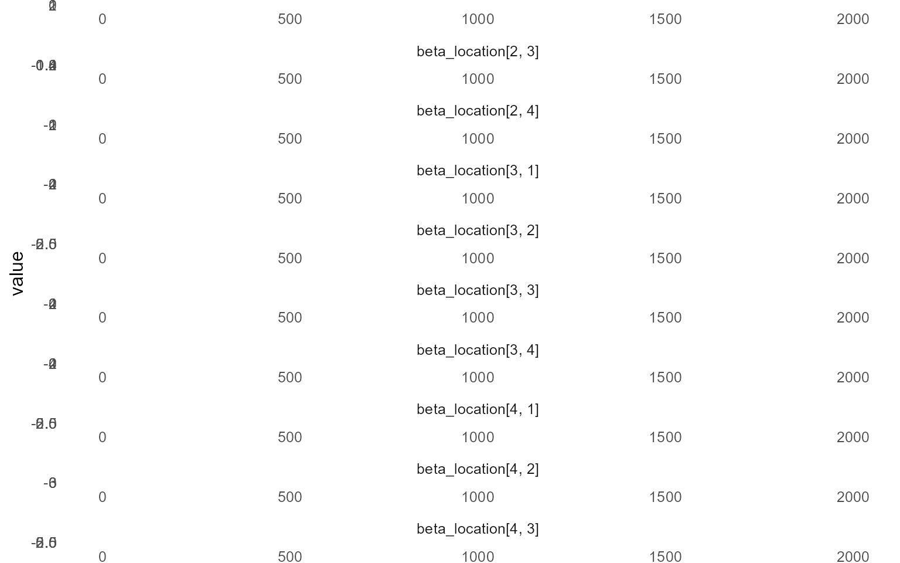
=== control ===
=== traceplot ===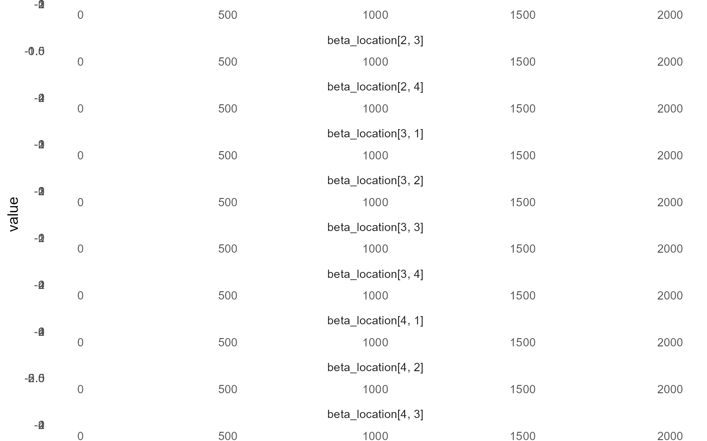
plot(fit_sb_bulk, params = "scale", family = "caterpillar")
=== treated ===
=== caterpillar ===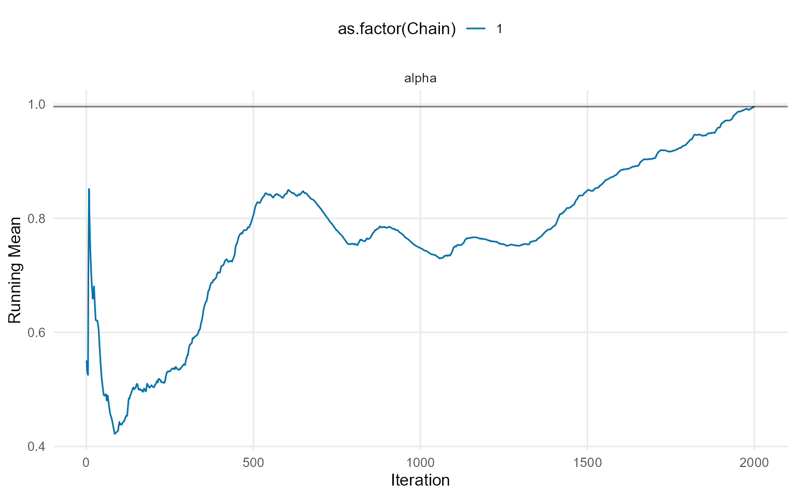
=== control ===
=== caterpillar ===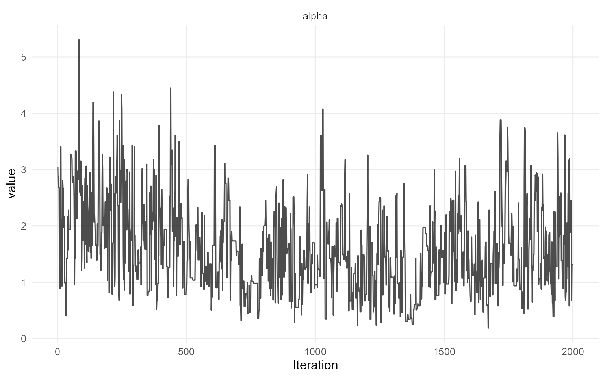
pred_mean_bulk <- predict(fit_sb_bulk, x = x_eval, type = "mean",
interval = "hpd", nsim_mean = 100)
plot(pred_mean_bulk)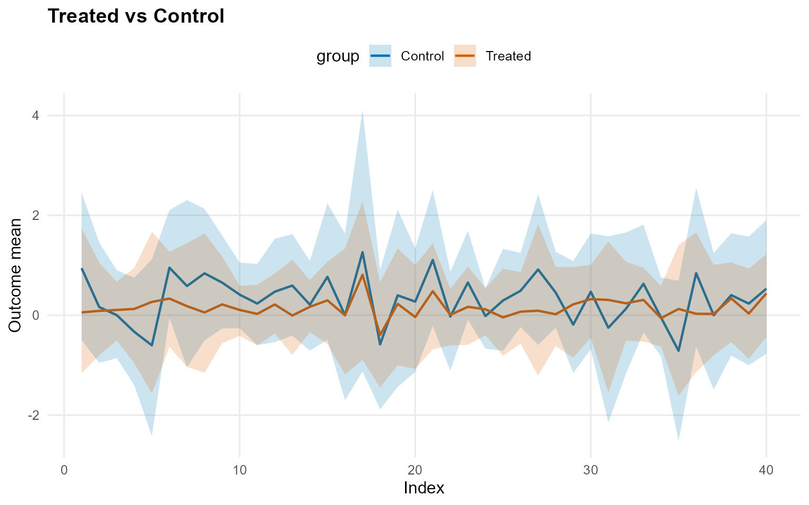
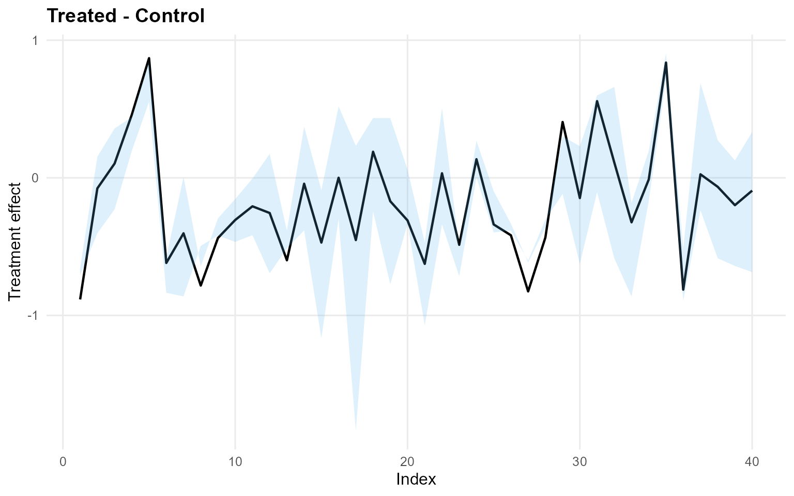
pred_q_bulk <- predict(fit_sb_bulk, x = x_eval, type = "quantile",
p = 0.5, interval = "hpd")
plot(pred_q_bulk)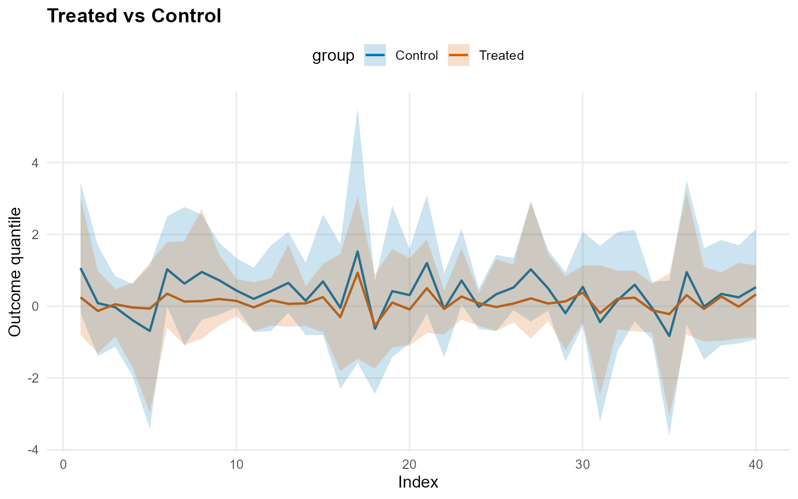
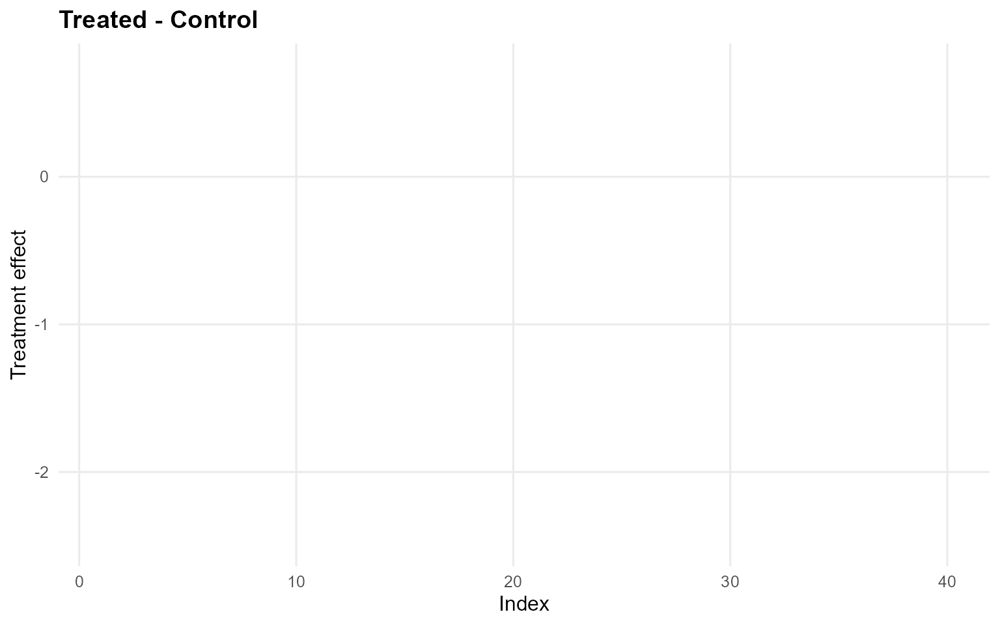
pred_d_bulk <- predict(fit_sb_bulk, x = x_eval, y = y_eval,
type = "density", interval = "hpd")
plot(pred_d_bulk)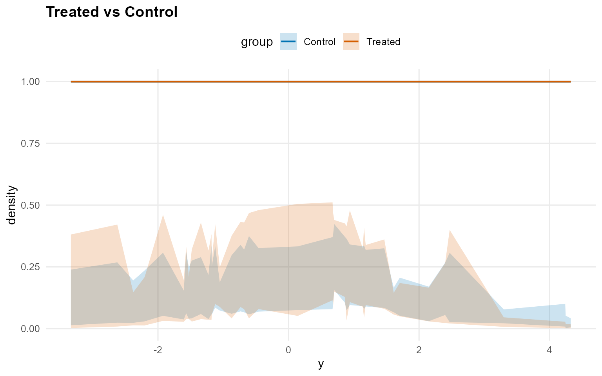
pred_surv_bulk <- predict(fit_sb_bulk, x = x_eval, y = y_eval,
type = "survival", interval = "hpd")
plot(pred_surv_bulk)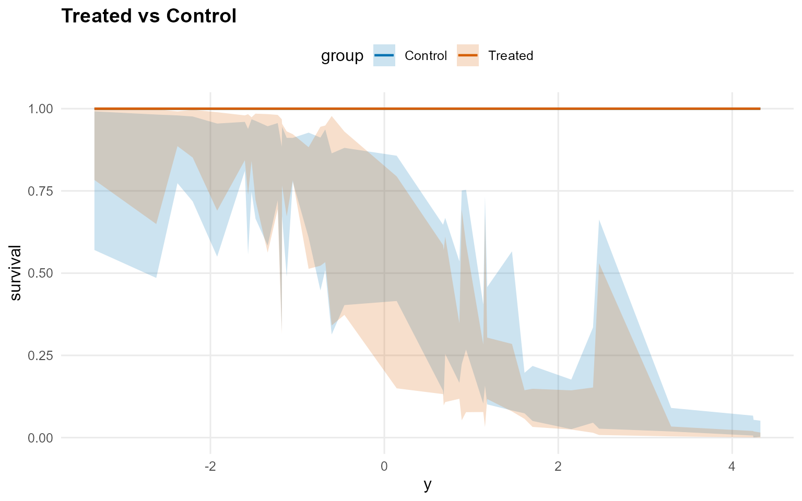
ATE (Average Treatment Effect)
Prediction points: 40
Conditional (covariates): YES
Propensity score used: NO
Posterior mean draws: 100
Credible interval: hpd
ATE estimates (treated - control):
id estimate lower upper
1 -0.896 -2.848 0.986
2 -0.077 -1.539 1.296
3 0.111 -0.951 1.088
4 0.466 -0.747 1.698
5 0.854 -1.471 2.905
6 -0.621 -2.019 0.79
... (34 more rows)
summary(ate_bulk)ATE Summary
==================================================
Prediction points: 40
Conditional: YES | PS used: NO
Posterior mean draws: 100
Interval: hpd
Model specification:
Backend (trt/con): sb / sb
Kernel (trt/con): laplace / laplace
GPD tail (trt/con): NO / NO
ATE statistics:
Mean: -0.176 | Median: -0.206
Range: [-0.896, 0.854]
SD: 0.419
Credible interval width:
Mean: 3 | Median: 2.816
Range: [1.413, 5.789]
ate_plots_bulk <- plot(ate_bulk)
ate_plots_bulk$treatment_effect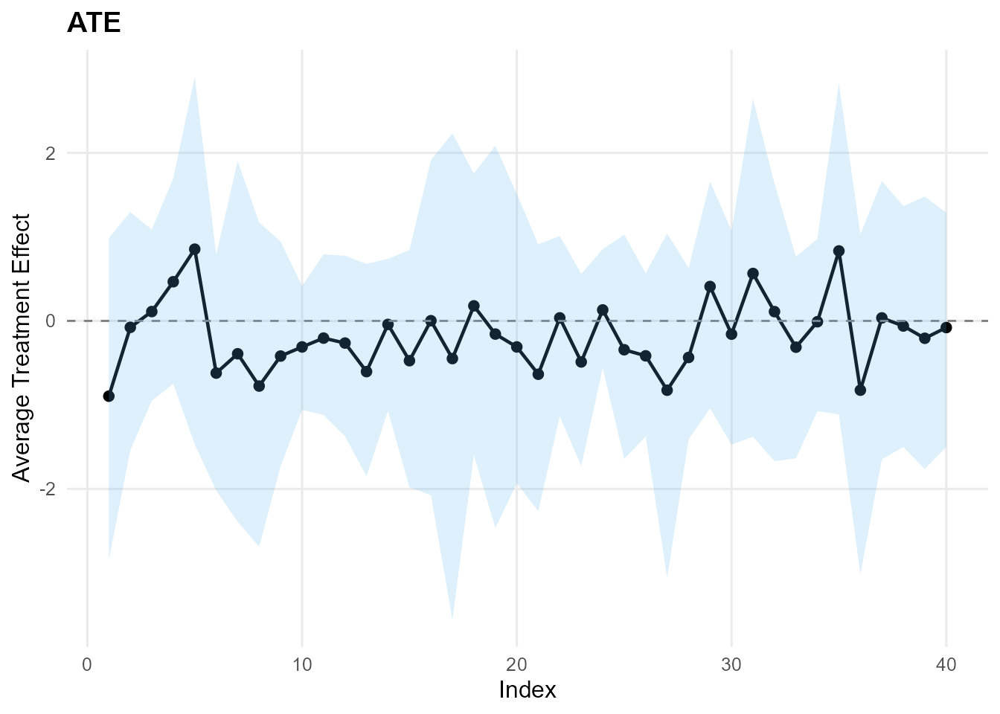
qte_bulk <- qte(fit_sb_bulk, probs = c(0.25, 0.5, 0.75),
newdata = x_eval, interval = "hpd")
print(qte_bulk)QTE (Quantile Treatment Effect)
Prediction points: 40
Quantile grid: 0.25, 0.5, 0.75
Conditional (covariates): YES
Propensity score used: NO
Credible interval: hpd
QTE estimates (treated - control):
index id estimate lower upper
0.25 1 -0.716 -2.436 0.907
0.25 2 0.035 -1.657 1.8
0.25 3 0.375 -0.703 1.5
0.25 4 0.531 -0.992 2.135
0.25 5 0.931 -2.407 4.03
0.25 6 -0.172 -1.66 1.071
... (114 more rows)
summary(qte_bulk)QTE Summary
==================================================
Prediction points: 40 | Quantiles: 3
Quantile grid: 0.25, 0.5, 0.75
Conditional: YES | PS used: NO
Interval: hpd
Model specification:
Backend (trt/con): sb / sb
Kernel (trt/con): laplace / laplace
GPD tail (trt/con): NO / NO
QTE by quantile:
quantile mean_qte median_qte min_qte max_qte sd_qte
0.25 0.099 0.108 -0.716 0.931 0.369
0.5 -0.238 -0.261 -0.816 0.622 0.363
0.75 -0.452 -0.547 -1.205 0.887 0.534
Credible interval width:
Mean: 3.38 | Median: 3.199
Range: [1.188, 7.465]
qte_plots_bulk <- plot(qte_bulk)
qte_plots_bulk$treatment_effect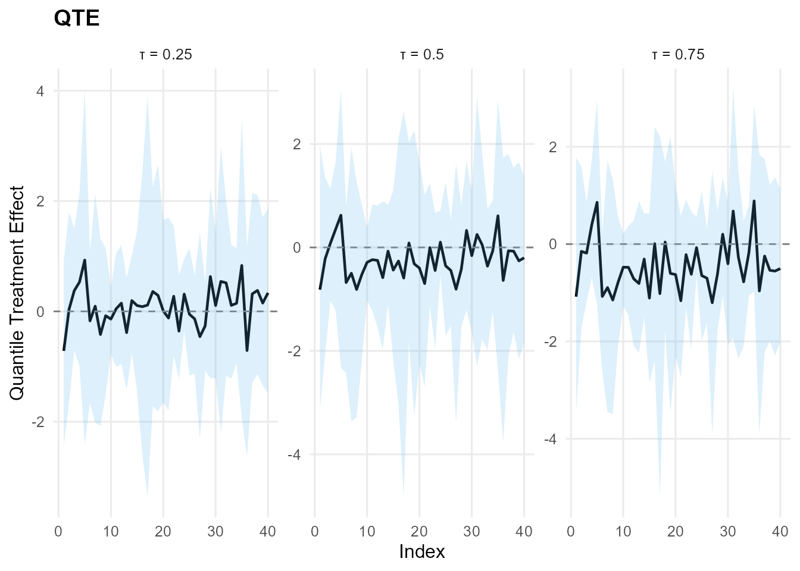
Model B: SB with GPD Tail (Laplace)
param_specs_gpd <- list(
gpd = list(
threshold = list(
mode = "dist",
dist = "lognormal",
args = list(meanlog = log(max(u_threshold, .Machine$double.eps)), sdlog = 0.25)
)
)
)
bundle_sb_gpd <- build_causal_bundle(
y = y,
T = T,
X = X,
kernel = "laplace",
backend = "sb",
PS = "logit",
GPD = TRUE,
components = 5,
param_specs = param_specs_gpd,
mcmc_outcome = list(niter = 2500, nburnin = 500, nchains = 1, thin = 1, seed = 2),
mcmc_ps = list(niter = 2500, nburnin = 500, nchains = 1, thin = 1, seed = 2)
)
bundle_sb_gpdDPmixGPD causal bundle
PS model: disabled
Outcome (treated): backend = sb | kernel = laplace
Outcome (control): backend = sb | kernel = laplace
GPD tail (treated/control): TRUE / TRUE
components (treated/control): 5 / 5
Outcome PS included: FALSE
epsilon (treated/control): 0.025 / 0.025
n (control) = 232 | n (treated) = 268
summary(bundle_sb_gpd)DPmixGPD causal bundle summary
DPmixGPD causal bundle
PS model: disabled
Outcome (treated): backend = sb | kernel = laplace
Outcome (control): backend = sb | kernel = laplace
GPD tail (treated/control): TRUE / TRUE
components (treated/control): 5 / 5
Outcome PS included: FALSE
epsilon (treated/control): 0.025 / 0.025
n (control) = 232 | n (treated) = 268
fit_sb_gpd <- run_mcmc_causal(bundle_sb_gpd)===== Monitors =====
thin = 1: alpha, beta_location, beta_tail_scale, scale, tail_shape, threshold, w, z
===== Samplers =====
RW sampler (36)
- alpha
- scale[] (5 elements)
- beta_location[] (20 elements)
- threshold
- beta_tail_scale[] (4 elements)
- tail_shape
- v[] (4 elements)
categorical sampler (232)
- z[] (232 elements)===== Monitors =====
thin = 1: alpha, beta_location, beta_tail_scale, scale, tail_shape, threshold, w, z
===== Samplers =====
RW sampler (36)
- alpha
- scale[] (5 elements)
- beta_location[] (20 elements)
- threshold
- beta_tail_scale[] (4 elements)
- tail_shape
- v[] (4 elements)
categorical sampler (268)
- z[] (268 elements)
summary(fit_sb_gpd)
-- Outcome fits --
[control]
MixGPD fit | backend: Stick-Breaking Process | kernel: Laplace Distribution | GPD tail: TRUE
n = 232 | components = 5 | epsilon = 0.025
MCMC: niter=2500, nburnin=500, thin=1, nchains=1
Fit
Use summary() for posterior summaries; plot() for diagnostics; predict() for predictions.
[treated]
MixGPD fit | backend: Stick-Breaking Process | kernel: Laplace Distribution | GPD tail: TRUE
n = 268 | components = 5 | epsilon = 0.025
MCMC: niter=2500, nburnin=500, thin=1, nchains=1
Fit
Use summary() for posterior summaries; plot() for diagnostics; predict() for predictions.
params(fit_sb_gpd)Posterior mean parameters (causal)
[treated]
Posterior mean parameters
$alpha
[1] "0.969"
$w
[1] "0.471" "0.329"
$beta_location
x1 x2 x3 x4
comp1 "0.435" "0.001" "0.208" "2.109"
comp2 "-0.072" "0.223" "-0.011" "-0.633"
comp3 "0.475" "-0.245" "-0.123" "1.642"
comp4 "0.251" "0.074" "-0.094" "0.509"
comp5 "-0.021" "0.348" "0.046" "-0.143"
$scale
[1] "1.36" "1.295"
$beta_tail_scale
[1] "0.041" "-0.144" "0.149" "-0.056"
$tail_shape
[1] "0.026"
[control]
Posterior mean parameters
$alpha
[1] "2.28"
$w
[1] "0.473" "0.276"
$beta_location
x1 x2 x3 x4
comp1 "-0.071" "-0.024" "-0.448" "0.783"
comp2 "-0.262" "-0.309" "-0.175" "1.381"
comp3 "-0.496" "-0.569" "-0.302" "0.872"
comp4 "-0.168" "0.318" "-0.437" "0.799"
comp5 "-0.12" "0.055" "-0.009" "-0.18"
$scale
[1] "1.048" "1.087"
$beta_tail_scale
[1] "0.412" "0.172" "0.037" "-0.202"
$tail_shape
[1] "0.004"
plot(fit_sb_gpd, family = "traceplot")
=== treated ===
=== traceplot ===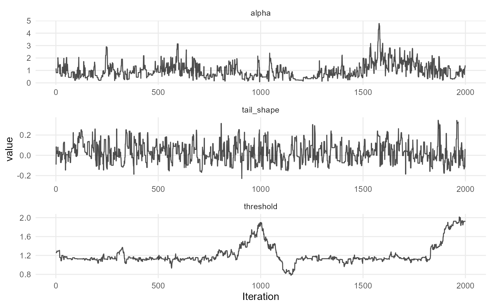
=== control ===
=== traceplot ===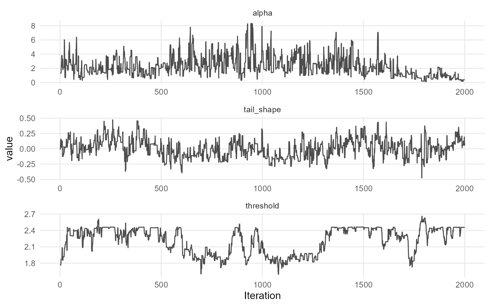
pred_mean_gpd <- predict(fit_sb_gpd, x = x_eval, type = "mean",
interval = "credible", nsim_mean = 100)
plot(pred_mean_gpd)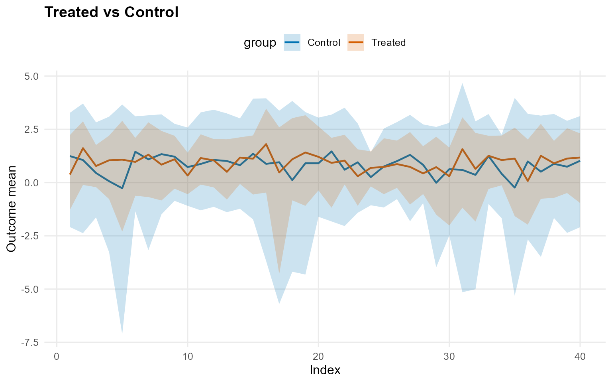
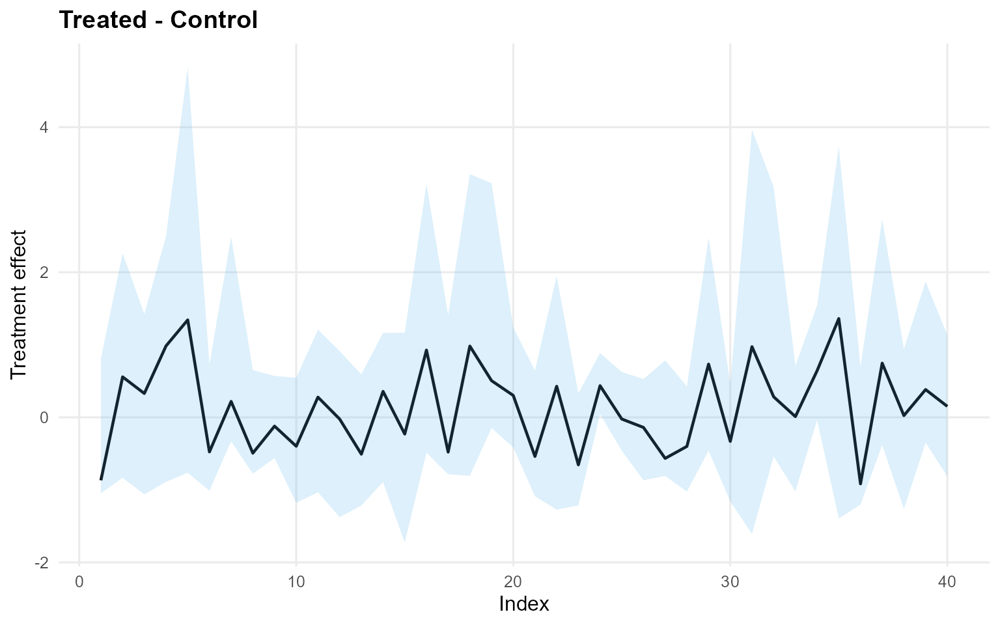
pred_q_gpd <- predict(fit_sb_gpd, x = x_eval, type = "quantile",
p = 0.5, interval = "credible")
plot(pred_q_gpd)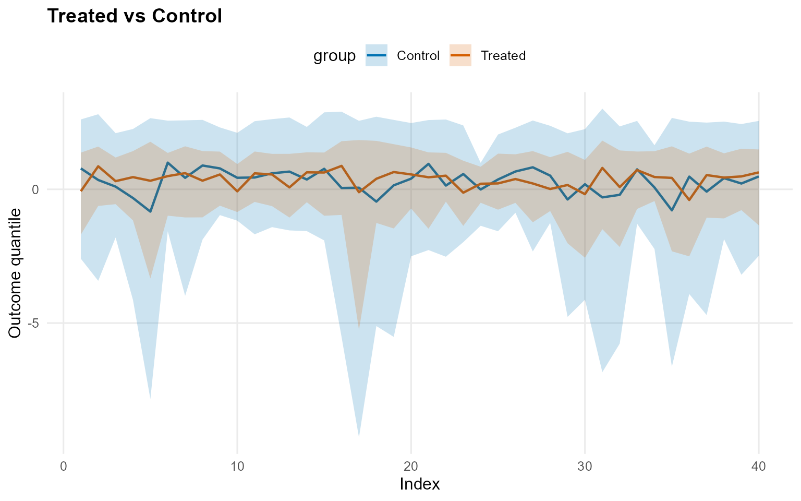
pred_d_gpd <- predict(fit_sb_gpd, x = x_eval, y = y_eval,
type = "density", interval = "credible")
plot(pred_d_gpd)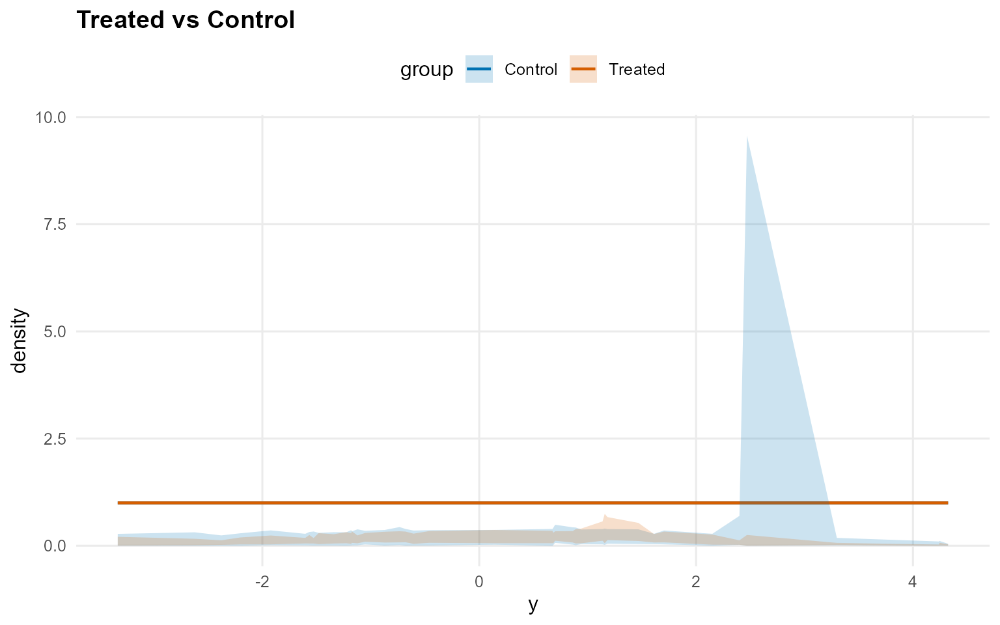
pred_surv_gpd <- predict(fit_sb_gpd, x = x_eval, y = y_eval,
type = "survival", interval = "credible")
plot(pred_surv_gpd)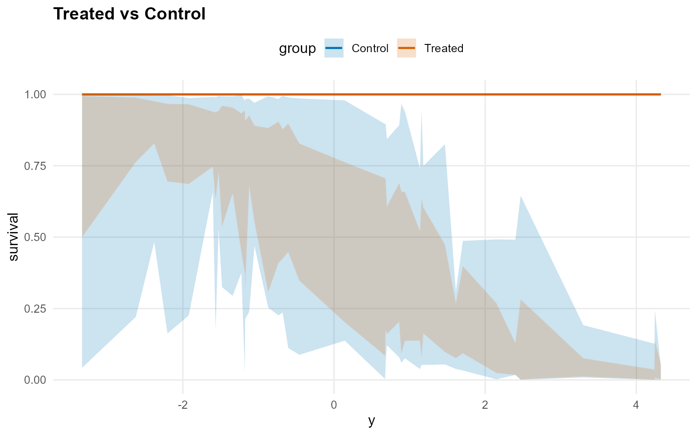
ATE (Average Treatment Effect)
Prediction points: 40
Conditional (covariates): YES
Propensity score used: NO
Posterior mean draws: 100
Credible interval: credible (95%)
ATE estimates (treated - control):
id estimate lower upper
1 -0.853 -3.932 3.271
2 0.561 -2.375 4.373
3 0.33 -2.28 2.628
4 0.968 -2.336 4.525
5 1.342 -3.902 8.184
6 -0.475 -3.194 2.956
... (34 more rows)
summary(ate_gpd)ATE Summary
==================================================
Prediction points: 40
Conditional: YES | PS used: NO
Posterior mean draws: 100
Interval: credible (95%)
Model specification:
Backend (trt/con): sb / sb
Kernel (trt/con): laplace / laplace
GPD tail (trt/con): YES / YES
ATE statistics:
Mean: 0.146 | Median: 0.182
Range: [-0.924, 1.363]
SD: 0.593
Credible interval width:
Mean: 6.703 | Median: 6.304
Range: [2.864, 12.086]
ate_plots_gpd <- plot(ate_gpd)
ate_plots_gpd$treatment_effect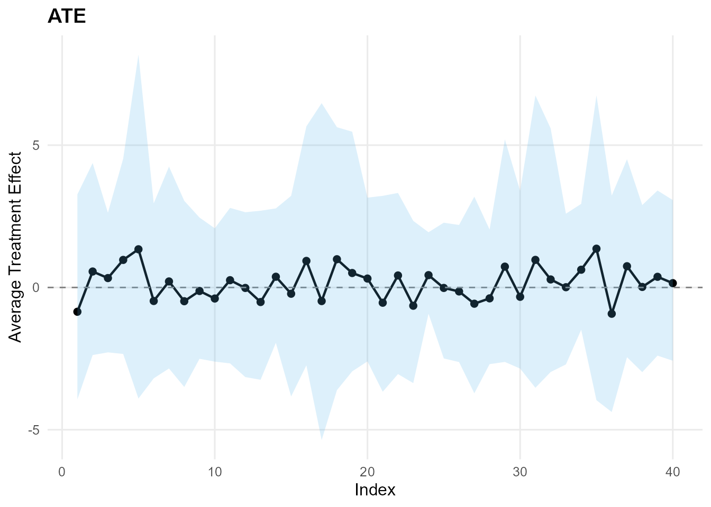
qte_gpd <- qte(fit_sb_gpd, probs = c(0.25, 0.5, 0.75),
newdata = x_eval, interval = "credible")
print(qte_gpd)QTE (Quantile Treatment Effect)
Prediction points: 40
Quantile grid: 0.25, 0.5, 0.75
Conditional (covariates): YES
Propensity score used: NO
Credible interval: credible (95%)
QTE estimates (treated - control):
index id estimate lower upper
0.25 1 -1.013 -4.26 3.34
0.25 2 0.076 -2.767 3.773
0.25 3 0.297 -1.827 2.246
0.25 4 0.838 -1.879 4.438
0.25 5 1.519 -3.473 8.968
0.25 6 -0.748 -3.294 2.185
... (114 more rows)
summary(qte_gpd)QTE Summary
==================================================
Prediction points: 40 | Quantiles: 3
Quantile grid: 0.25, 0.5, 0.75
Conditional: YES | PS used: NO
Interval: credible (95%)
Model specification:
Backend (trt/con): sb / sb
Kernel (trt/con): laplace / laplace
GPD tail (trt/con): YES / YES
QTE by quantile:
quantile mean_qte median_qte min_qte max_qte sd_qte
0.25 -0.044 -0.058 -1.013 1.521 0.641
0.5 0.079 0.154 -0.874 1.213 0.556
0.75 -0.119 -0.146 -0.902 0.804 0.436
Credible interval width:
Mean: 6.235 | Median: 5.524
Range: [2.491, 15.654]
qte_plots_gpd <- plot(qte_gpd)
qte_plots_gpd$treatment_effect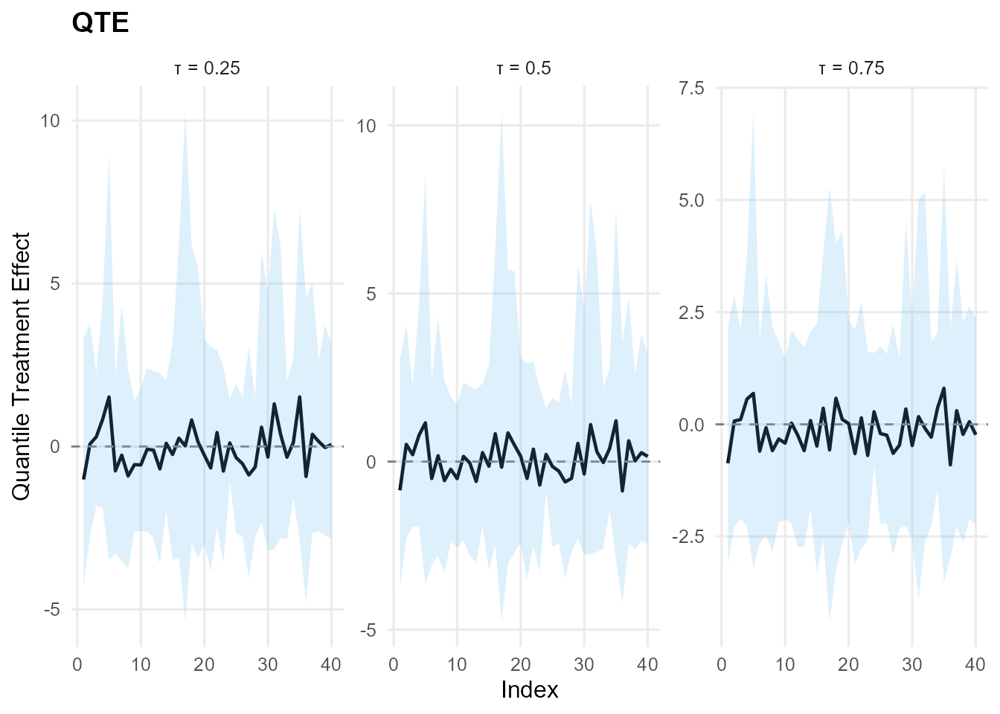